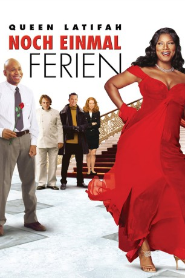

#8802 Noch einmal Ferien
Alternativ: Last Holiday
 
 IMDB-Wertung: 6.4 / 10
IMDB-Wertung: 6.4 / 10  Metascore: 0
Metascore: 0 
Kochwarenfachverkäuferin Georgia träumt vom Dasein als Gourmetköchin und einer Beziehung mit ihrem Schwarm und Kollegen Sean als die Diagnose Hirntumor ihr Leben völlig aus der Bahn wirft. Um die letzten Tage zu genießen und einfach noch einmal so richtig auf den Putz zu hauen, jettet sie nach Europa, steigt unter falschem Namen im besten Grand Hotel am Platze ab und leistet sich feurige Affären mit Politikern, Sterne-Köchen und schließlich gar dem Besitzer ihrer Kaufhauskette.
Jahr: 2006
Dauer: 111 Minuten
FSK: 0
Land: USA Studio: Paramount PicturesTonspuren: DD5.1 - ,
Untertitel: Deutsch,
Auflösung: 1080p (1920x816) Größe: 8437 MB
Genre: Komödie
Regisseur: Wayne Wang
Drehbuch: Jeffrey Price
Soundtrack: George Fenton
Darsteller:
 Queen Latifah als Georgia Byrd
Queen Latifah als Georgia Byrd LL Cool J als Sean Matthews
LL Cool J als Sean Matthews Timothy Hutton als Matthew Kragen
Timothy Hutton als Matthew Kragen Giancarlo Esposito als Senator Dillings
Giancarlo Esposito als Senator Dillings Alicia Witt als Ms. Burns
Alicia Witt als Ms. Burns Gérard Depardieu als Chef Didier
Gérard Depardieu als Chef Didier Jane Adams als Rochelle
Jane Adams als Rochelle- Michael Estime als Marlon
- Jascha Washington als Darius
 Matt Ross als Adamian
Matt Ross als Adamian Michael Nouri als Congressman Stewart
Michael Nouri als Congressman Stewart Jaqueline Fleming als Tanya
Jaqueline Fleming als Tanya- Kendall Mosby als Anton
- Chloe Bailey als Angie
- Halle Bailey als Tina
 Julia Lashae als HMO Administrator
Julia Lashae als HMO Administrator- Werner Richmond als Reverend
- Emeril Lagasse als Emeril Lagasse
- Maria Mason als Receptionist
- Lana Likic als Dress Shop Saleswoman
 Ellen Savaria als Mrs. Stewart
Ellen Savaria als Mrs. Stewart- Jessie Terrebonne als Flight Attendant
- Randall Sims als Flight Attendant
 Petr Vanek als Felipe
Petr Vanek als Felipe- Lucie Vondrácková als Marie
- Tomás Mechácek als Ski Instructor
- Smokey Robinson als Smokey Robinson
- Jaroslav Vízner als English Gentleman
- Tomás Jerábek als Puppeteer
- Stephen Rue als Mayor Dean (uncredited)
- Gary Michael Smith als Co-Worker (uncredited)
- Mervyn Warren als Keyboard Player for Smokey Robinson (uncredited)
- Avery White als Department Supervisor (uncredited)
 Michael Wozniak als Bank Patron (uncredited)
Michael Wozniak als Bank Patron (uncredited) Susan Kellermann als Gunther
Susan Kellermann als Gunther- Ranjit Chowdhry als Dr. Gupta
- Dan Ziskie als Dr. Thompson
- Erica Edwards als Salesgirl
- Brandy Scott als Salesgirl
- Margaret Mungai als Salesgirl
- Shirl Cieutat als Lady Moocher
- Donna Denley als Nurse
- Camille Hunt als Dress Shop Saleswoman
- John Wilmot als Bank Officer
- Susan Levitas als First Class Flight Attendant
- Vladimír Kulhavý als Taxi Driver
- Zina Blahusova als Grand Dame
- Noel le Bon als Gambini
- Lucie Brezovská als Brigitta
- Daniel Cech als Pupp Waiter
Datei: X:\2006(N-Z)\Noch einmal Ferien (2006, FSK0, 1920x816).mkv seit 30.04.2018
Festplatte: HD 2005(G-Z)-2006(A-Z)
 Es gibt insgesamt 62 Filme in der Gruppe '2006(N-Z)'
Es gibt insgesamt 62 Filme in der Gruppe '2006(N-Z)'